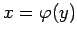
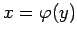

Inhalt Index DeskTop Bronstein

 Differentialrechnung Differentiation von Funktionen einer Veränderlichen Ableitungen höherer Ordnung
Differentialrechnung Differentiation von Funktionen einer Veränderlichen Ableitungen höherer Ordnung


Wenn  die inverse Funktion zur ursprünglichen Funktion y = f(x) ist, dann gilt: Die beiden Darstellungen y=f(x) und  sind äquivalent. Unter der Voraussetzung
die inverse Funktion zur ursprünglichen Funktion y = f(x) ist, dann gilt: Die beiden Darstellungen y=f(x) und  sind äquivalent. Unter der Voraussetzung  besteht dann die Beziehung (6.15) zwischen den Ableitungen einer Funktion f und ihrer Umkehrfunktion
besteht dann die Beziehung (6.15) zwischen den Ableitungen einer Funktion f und ihrer Umkehrfunktion  . Für höhere Ableitungen ( usw.) erhält man
. Für höhere Ableitungen ( usw.) erhält man
| (6.25) |